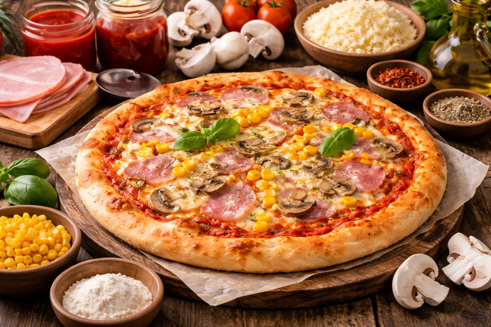

Suroviny
- 350 g hladkej múky
- 150 g výberovej múky
- 0,3 l vlažnej vody
- 1/2 kocky kvasníc
- Soľ, cukor, masť
- Rajčinová drť, kečup, koreniny
- Šunka, syr, kukurica, šampiňóny
Postup
- Vypracujeme cesto a rozdelíme ho na 4 bochníky.
- Pripravíme a uvaríme pomodoro omáčku.
- Cesto rozvaľkáme, potrieme omáčkou a obložíme.
- Pečieme 15–20 minút pri 200 °C.